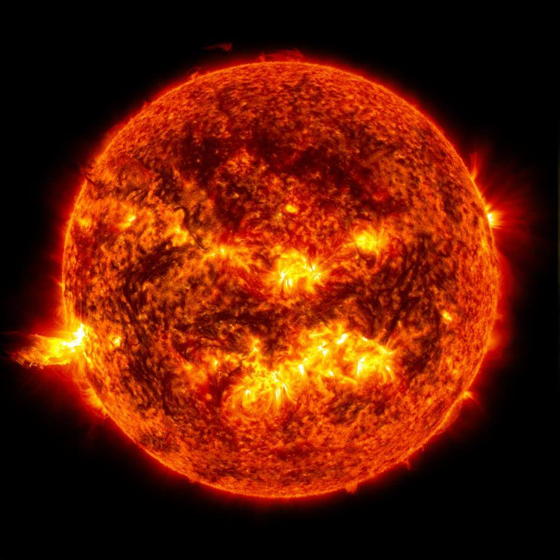

SUN
The Sun: Structure and Composition
- The Sun is a massive, luminous ball of hot plasma, primarily composed of hydrogen and helium.
- It has a core where nuclear fusion occurs, releasing energy in the form of light and heat.
- The Sun's surface, known as the photosphere, exhibits sunspots and solar flares.
Time on the Sun
- The Sun rotates on its axis, but different parts rotate at different rates due to its gaseous nature.
- A complete rotation takes around 25 days at the equator and up to 35 days at the poles.
The Sun's Neighbors
- The Sun is a star located at the center of our solar system.
- It is orbited by planets, including Earth, and other celestial bodies such as asteroids and comets.
Quick History of the Sun
- Humans have been aware of the Sun since ancient times, with various cultures incorporating it into their myths and observations.
- Scientific understanding of the Sun has evolved, and it plays a central role in our solar system's dynamics and the sustenance of life on Earth.
What does Sun look like?

This image captured by NASA's Solar Dynamics Observatory on June 20, 2013, shows the bright light of a solar flare on the left side of the Sun. Credit: NASA/SDO